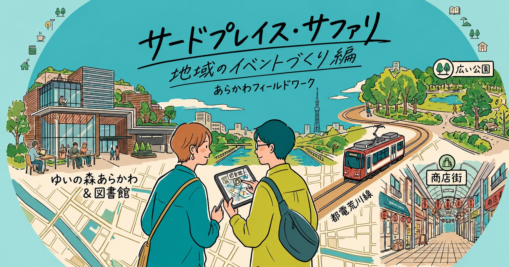
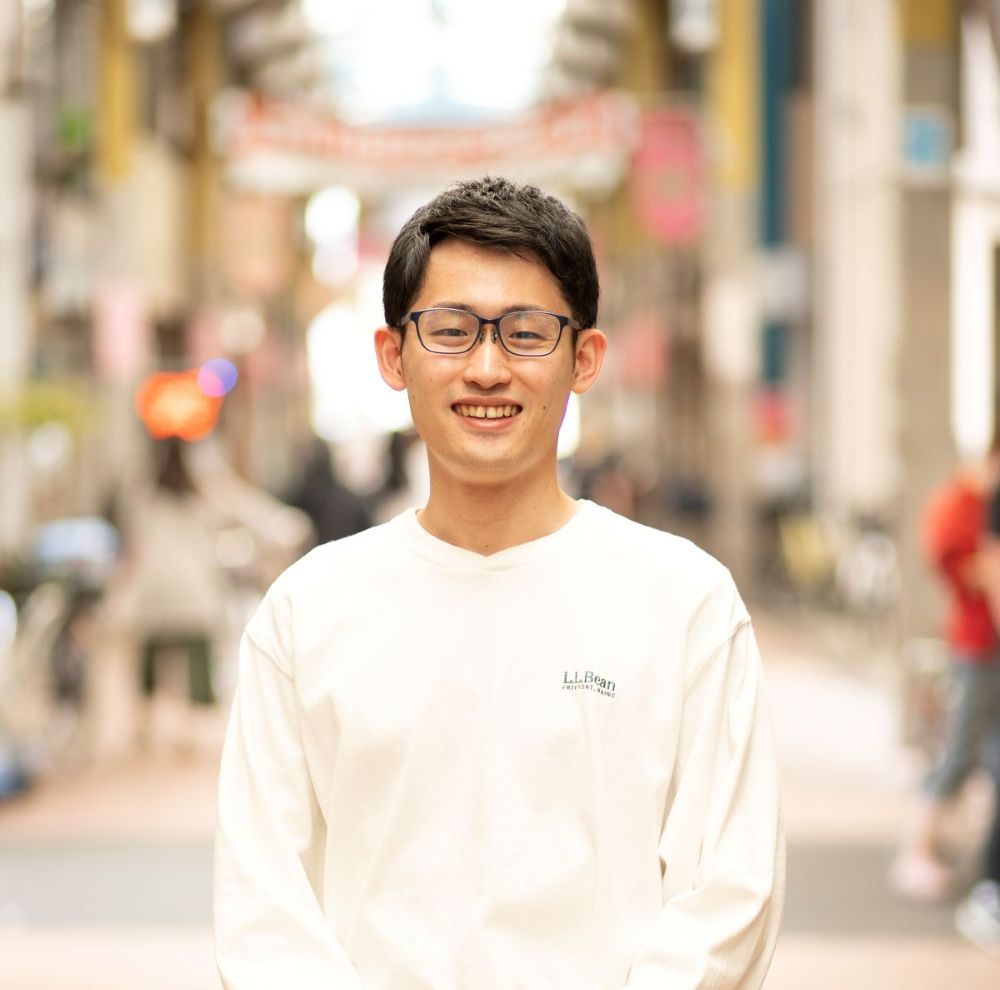
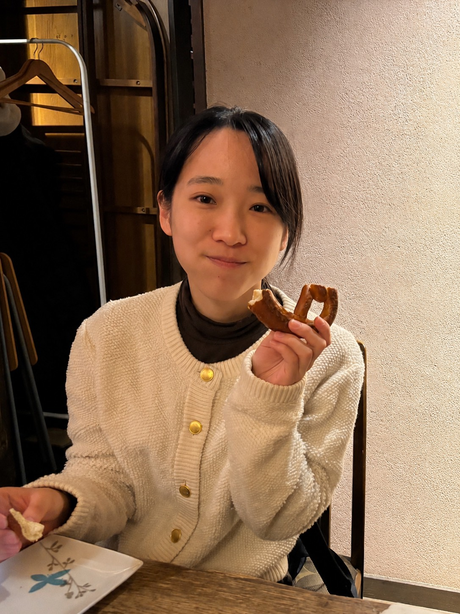
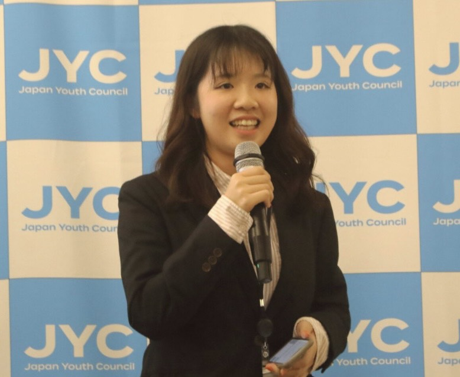

まちのイベントの、舞台裏へ。
この冬、規模の違う3つのイベントに関わる3か月のフィールドワーク。
募集期間：2026年11月15日（日）〜12月12日（土）
居場所の小さなイベントも、クリスマスマーケットも、2000人が集まるフェスも。
お客さんとして行けば楽しい一日ですが、その裏には、つくる人、お金を出す人、出展する人がいます。
今回のサファリでは、規模の違う3つのイベントに裏方として関わりながら、そのイベントがまちで果たしている役割を、4つのレンズでじっくり考えていきます。
数十人のイベントから、2000人のイベントまで。規模が変わると、つくる人も、お金の流れも、出展する理由も変わります。
荒川区に在住・在学に限らず、地域のイベントに興味がある高校生・大学生を募集します。定員は合わせて5名です。
荒川わかもの団を運営する大学生・社会人メンバーです。一緒に冬のサファリをつくりましょう！

地域の現場に触れて興味や関心を拡げるきっかけにしてほしいです。

ワクワクや楽しい気持ちを大切に、地域であなたのやりたいを見つけるお手伝いをします😆

私も高校時代、探究に熱中してました。荒川区にある素敵な場所、面白い大人に皆んなで出会いに行きましょう‼
はい。経験は問いません。研修会で準備をしてから現場に入るので、初めての方も安心して参加できます。
はい。第2弾から初めて参加する方も大歓迎です。
3回の研修会への参加を基本としています。イベントの日程は受け入れ先にあわせて決まるので、都合がつかない日はご相談ください。テスト期間にも配慮します。
2027年3月14日（日）にあらかわ遊園で開かれる、若者がつくる「まちの文化祭」です。サファリの参加者は、運営スタッフとしてブースや交流企画に関わります。
定員が5名のため、説明会のあとにエントリーしていただき、合否を決めさせていただきます。
はい。在住・在学は問いません。交通費などはお気軽にご相談ください。
説明会のあと、下記フォームからエントリーしてください。
初めての方も、ぜひお気軽にご応募ください！
募集期間：2026年11月15日（日）〜12月12日（土）